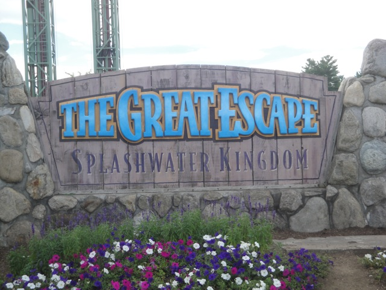
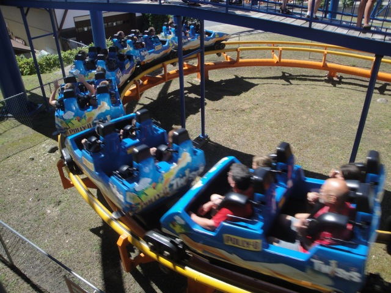
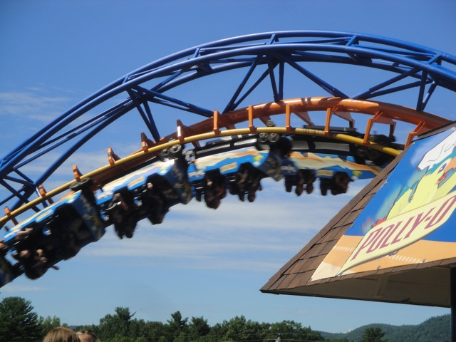
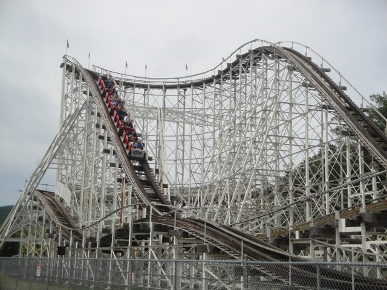
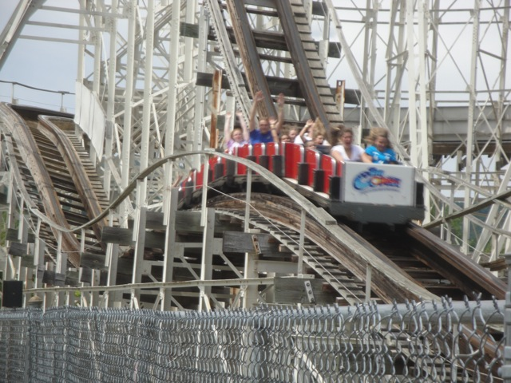

TPR's Northeast Trip
Bowcraft & NYC Coney Island Quassy Lake Compounce Six Flags New England
Palace Playland Funtown Splashtown Canobie Lake Park
La Ronde
Great Escape
Six Flags Great Adventure
All right. We have arrived at the Great Escape.

Hello Great Escape. Haven't seen you since the North of the Border Trip. Hope you're just as awesome as you were back then.
Ooh. Heading through some backstage areas. Ultimately, this led us straight to...
 An hour of ERT on Comet @ the Great Escape!!!!!!! =)
An hour of ERT on Comet @ the Great Escape!!!!!!! =)
HELL F*CKING YES!!!!!!! =)
 Just as expected, an hour of Comet ERT kicked some serious ass.
Just as expected, an hour of Comet ERT kicked some serious ass.
Here's some info on Comet's origins in case you plan on being a coaster nerd and play coaster trivia.
 After the crazy Comet ERT, we decided to hit up the Alpine Bobsled.
After the crazy Comet ERT, we decided to hit up the Alpine Bobsled.
 While it was fun and all, it was kind of uncomfortable due to all the braking the ride does.
While it was fun and all, it was kind of uncomfortable due to all the braking the ride does.
And let's not forget about the total lack of legroom. (JoAnna, we're doing this simply to torture you. *evil laugh*)
 Time to get the only credit that I didn't have at the Great Escape.
Time to get the only credit that I didn't have at the Great Escape.
Yeah. There's a lot of whoring going on here.
 This ride sucked. Even by kiddy coaster standards, this thing was a rough peice of sh*t.
This ride sucked. Even by kiddy coaster standards, this thing was a rough peice of sh*t.
"I really wish my kids were with me. Then I could ride this without feeling so ashamed."
 All right. Lets take another spin on Canyon Blaster.
All right. Lets take another spin on Canyon Blaster.
 I said it last time I was here, and I'll say it again. One of the lamest mine trains ever.
I said it last time I was here, and I'll say it again. One of the lamest mine trains ever.
 Even the typical fake helix of death mine train ending is lame due to going into it right after the lifthill.
Even the typical fake helix of death mine train ending is lame due to going into it right after the lifthill.
Are we really in a Six Flags park?
"Can you guys give me a loan?"
"Hey Cody!!! We found your hat!!!!"
I really wish I knew this back when I was in Canada.
 Do we really need to get on Steamin Demon today?
Do we really need to get on Steamin Demon today?
 Yeah. This ride is sponsered by Polly O Cheese. So yeah, now it's Cheese the ride.
Yeah. This ride is sponsered by Polly O Cheese. So yeah, now it's Cheese the ride.

This ride got bad. REALLY BAD!!!! In 2008, it was just lame, but now, it went from a stupid lame ride to an head busting horrible steaming pile of sh*t. Sort of like Kong.

Yeah. Those people are getting their heads cracked open right now.
 "Why oh why did I let my children partake in the Alcohol Exchange?"
"Why oh why did I let my children partake in the Alcohol Exchange?"
 Considering how this was not only my 100th credit, but also the best Boomerang I'd ridden, I decided to give the Boomerang a reride.
Considering how this was not only my 100th credit, but also the best Boomerang I'd ridden, I decided to give the Boomerang a reride.
While it's still one of the better Boomerangs, it's not nearly as good as I remembered it. Damn, what is it with all these rides going downhill?
 Since my last visit, Great Escape got the S&S Towers from Six Flags New Orleans, which I must admit look really cool in the Great Escape. (See, EVERY PARK on this trip had an S&S Tower!!!!)
Since my last visit, Great Escape got the S&S Towers from Six Flags New Orleans, which I must admit look really cool in the Great Escape. (See, EVERY PARK on this trip had an S&S Tower!!!!)
Did I mention that this park is freaking beautiful?
Wow. Great Escape is really giving away some seriously good prizes.
 Thank you for giving us such a good lunch witha wide variety of options Great Escape.
Thank you for giving us such a good lunch witha wide variety of options Great Escape.
 All right. After lunch, I decided to take some more rides on this awesome awesome woodie known as Comet.
All right. After lunch, I decided to take some more rides on this awesome awesome woodie known as Comet.

While not nearly as good as Coaster or Boulderdash, this is still without a doubt one of the best wooden coasters ever.
 You go through these turns so fast they almost feel like Wild Mouse turns.
You go through these turns so fast they almost feel like Wild Mouse turns.

And there is just loads of airtime throughout the ride. Regardless of where you sit.
Definetly come to the Great Escape and check out this awesome awesome ride. It's totally worth it. =)
This is just freaking awesome. Thank you Great Escape!!! =)
We checked out the parks Music Express. And yeah, it was really fun.
Ahh. Group Photo on the Swan Boats.
Yeah. We rode the Swan Boats and it was awesome. (Ok, maybe not awesome, but we had a good time and that's all that matters.)
 Frankies Mine Train from the Swan Boats.
Frankies Mine Train from the Swan Boats.
"Please put away the camera and just let us be ducks."
Ooh. We're molesting the statue. Look how naughty we are!!!
Speaking of molesting statues...
Magic Forest was bonus park that we made on the Northeast Trip. And bonus parks are always awesome!!! =) While the park had plenty of statues to molest, we came here for...
That's right. Credit Whoring.
In a hilarious event, we actually broke the coaster. It kept rolling back since it couldn't support our fat asses. We literally had to kick people off to get the ride to work. See Robb's video of the rollback here!!! (He even used some of my footage in the video.)
Yeah. We truely are sad and pathetic, and deadly to tiny little kiddy coasters.
"Cut the pellet crap. Gimme your hat Shawn."
*sigh* "The sooner we get into outer space, the sooner we'll get away from idiots like these guys."
 We had dinner that night at an Italian Resteraunt Chain called Carrabas.
We had dinner that night at an Italian Resteraunt Chain called Carrabas.
While we have similar chains in California such as Macaroni Grill, this is just better for some reason. The food is just freaking awesome. I mean, just look how good that is. *drool*
How many employees had to soil themselves for them to put up this sign?
Six Flags Great Adventure
Home